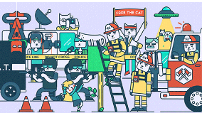

configure your server
or a distributed system
or even develop the architecture
and help with implementation.
write a script
or automate something.
teach this magic
and explain how it works.
help with interesting project
especially with open source.
And many more ;)
kung fu my business,
and I have a passion
and experience with the
complex environments like this:

operations team at work
I'm responsible,
and people trust me,
and you can!
DevOps for Glympse
Responsibilities included:
Development for environment
To facilitate operations I develop automation with Ansible: scale infrastructure with Amazon EC2 and Docker, deploy MongoDB cluster with replication and sharding, setup monitoring with ElastAlert and other stuff. Also I do not forget about testing and CI: we use a bundle of Vagrant and Jenkins.
Environment:
- AWS cloud
- Ansible
- Docker, Vagrant
- AWS linux
- Russian and English meetings, communications, docs
Nov 2015 - present
Software Engineer
Project: Online games
World of Tanks
World of Warships
World of Tanks Blitz
World of Tanks Xbox
World of Warplanes
Responsibilities included:
Deployment
I take an active part in the monthly releases of our projects. Day, night, weekends… In addition, I create and maintain our local environment for QA with continuous integration and autobuilds.
Operations
I'm part of our 24/7/365 support as L2 duty.
Integration in current environment
I'm a responsible for the World of Tanks Xbox project from the very start. I helped the Chicago studio with the development and integration of this project, designed the implementation and maintenance scheme from scratch. I also took it upon myself to participate in the integration of other projects.
Development for our environment
A large and complex project requires a special attitude. As part of the team I participate in the development and implementation of new standards and services to support our projects: scripts for deployment and environment with Fabric, Ansible and Puppet; improvement for monitoring with Zabbix and Sensu; collecting metrics; tests - it's only a small part of work.
Documentation
Writing documentation and To-Do's is part of my daily work. Also I implement autogeneration for api documentation with Pdoc, MkDocs and ReadTheDocs.
Communication and Evangelism
I'm a presenter and speaker at Minsk Python Meetup as well as at the internal meetups of our company.
Environment:
- high load: thousands of bare metal servers and over a hundred thousand log messages and events per second
- multiple programming languages and technologies: Python, Ruby, C++, Erlang
- multiple os: CentOs, Ubuntu, Windows
- multiple datacenters: RU, EU, US, ASIA, CN
- multiple developer studios: Minsk, Kiev, St. Peterburg, Chicago
- multiple languages: Russian and English meetings, communications, docs
July 2012 - October 2015
Presenter and Speaker
Monthly public meetups on the topic of python language and programming technology in general
August 2014 - present
This is GameDev, baby! Interview with developers of World of Tanks
Сontainers. We need to go deeper
Отчет о конференции europython 2015
Faculty of Radiophysics and Computer Technologies
Student without a bachelor degree
Studying:
- Programming languages and technologies: c, c++, java, matlab
- Development directions: embedded systems, networks, system programming, engineering, science
- Science directions: higher mathematics, general and theoretical physics, information and computer sciences
Sep 2009 - July 2013